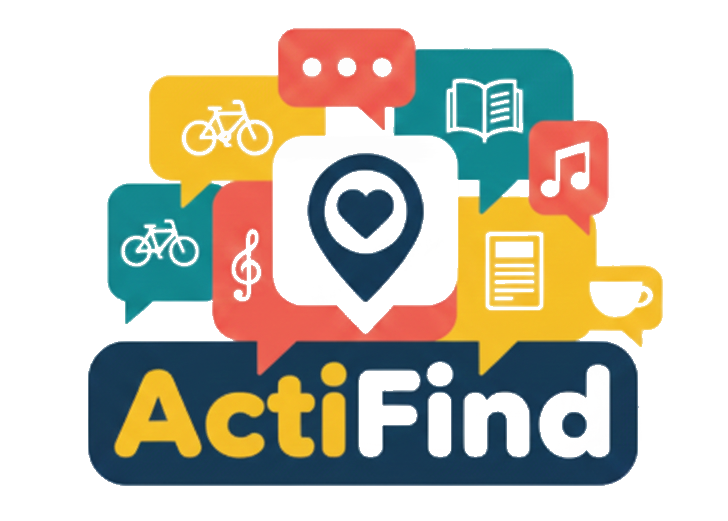

<div class="header-bar">
  <div class="left">
    <div class="logo-container">
      
    </div>
  </div>


  <div class="right">
    <ion-avatar  routerLink="/profile" aria-label="Profile">
      <ion-icon class="avatar" name="person-circle-outline"></ion-icon>
    </ion-avatar>

  </div>
</div>
